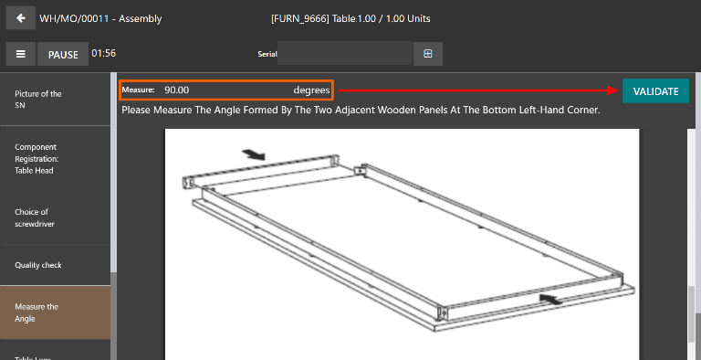

Measure quality check¶
In Odoo Quality, a Measure check is one of the quality check types that can be selected when creating a new quality check or quality control point (QCP). Measure checks prompt users to measure a certain aspect of a product and record the measurement in Odoo. For the quality check to pass, the recorded measurement must be within a certain tolerance of a norm value.
Create a Measure quality check¶
There are two distinct ways that Measure quality checks can be created. A single check can be manually created. Alternatively, a QCP can be configured that automatically creates checks at a predetermined interval.
This documentation only details the configuration options that are unique to Measure quality checks and QCPs. For a full overview of all the configuration options available when creating a single check or a QCP, see the documentation on quality checks and quality control points.
Quality check¶
To create a single Measure quality check, navigate to , and click New. Fill out the new quality check form as follows:
In the Type drop-down field, select the Measure quality check type.
In the Team drop-down field, select the quality team responsible for managing the check.
In the Instructions text field of the Notes tab, enter instructions for how the picture should be taken.

Quality control point (QCP)¶
To create a QCP that generates Measure quality checks automatically, navigate to , and click New. Fill out the new QCP form as follows:
In the Type drop-down field, select the Measure quality check type. Doing so causes two new fields to appear: Norm and Tolerance.
Use the first text-entry field of the Norm field to record the ideal measurement that the product should conform to. Use the second text-entry field to specify the unit of measurement that should be used.
The Tolerance field features two sub-fields: from and to. Use the from field to specify the minimum acceptable measurement, and the to field to specify the maximum acceptable measurement.
In the Team drop-down field, select the quality team responsible for managing the checks created by the QCP.
In the Instructions text field, enter instructions for how the measurement should be taken.

Process a Measure quality check¶
Once created, there are multiple ways that Measure quality checks can be processed. If a quality check is assigned to a specific inventory, manufacturing, or work order, the check can be processed on the order itself. Alternatively, a check can be processed from the check’s page.
From the check’s page¶
To process a Measure quality check from the check’s page, begin by navigating to , and select a quality check. Follow the Instructions for how to take the measurement.
After taking the measurement, record the value in the Measure field on the quality check form. To manually pass or fail the check, click Pass or Fail at the top-left corner of the check.
Alternatively, if the quality check is assigned to a QCP for which norm and tolerance values have been specified, click Measure at the top-left corner of the check instead. Doing so automatically marks the check as Passed if the recorded value is within the specified tolerance, or Failed if the value is outside of it.
On an order¶
To process a Measure quality check on an order, select a manufacturing order or inventory order (receipt, delivery, return, etc.), for which a check is required. Manufacturing orders can be selected by navigating to , and clicking on an order. Inventory orders can be selected by navigating to , clicking the # To Process button on an operation card, and selecting an order.
On the selected manufacturing or inventory order, a purple Quality Checks button appears at the top of the page. Click the button to open the Quality Check pop-up window, which shows all of the quality checks required for that order.
To process a Measure quality check, measure the product as instructed, then enter the value in the Measure field on the pop-up window. Finally, click Validate to register the recorded value.

If the value entered is within the range specified in the Tolerance section of the QCP, the quality check passes and the pop-up window closes. The rest of the manufacturing or inventory order can then be processed as usual.
However, if the value entered is outside of the specified range, a new pop-up window appears, titled Quality Check Failed. The body of the pop-up shows a warning message that states, You measured # units and it should be between # units and # units., as well as the instructions entered in the Message If Failure tab of the QCP. At the bottom of the pop-up, two buttons appear: Correct Measure and Confirm Measure.

If the measurement was not entered correctly and should be changed, select Correct Measure. Doing so re-opens the Quality Check pop-up window. Enter the corrected measurement in the Measure field, and then click Validate to complete the check.
If the measurement was entered correctly, click Confirm Measure instead, and the quality check fails. Follow any instructions that were listed on the Quality Check Failed pop-up window.
If a quality alert must be created, click the Quality Alert button that appears at the top of the manufacturing or inventory order after the check fails. Clicking Quality Alert opens a quality alert form on a new page.
For a complete guide on how to fill out the quality alert form, view the documentation on quality alerts.
On a work order¶
When configuring a QCP that is triggered during manufacturing, a specific work order can also be specified in the Work Order Operation field on the QCP form. If a work order is specified, a Measure quality check is created for that specific work order, rather than the manufacturing order as a whole.
Measure quality checks created for work orders must be processed from the tablet view. To do so, begin by navigating to . Select a manufacturing order that includes a work order for which a quality check is required. Open the tablet view for that work order by selecting the Work Orders tab, and then clicking the 📱 (tablet) button on the order’s line.
With tablet view open, complete the steps listed on the left side of the screen until the Measure quality check step is reached. Upon reaching the check, the instructions for how to take the measurement appear at the top of the screen. Enter the measured value in the Measure field above the instructions, and then click Validate.
If the measurement entered is within the range specified in the Tolerance section of the QCP, the quality check passes and the tablet view moves on to the next step of the work order. However, if the measurement entered is outside of the specified range, a pop-up window appears, titled Quality Check Failed.
The body of the Quality Check Failed pop-up window shows a warning message that states, You measured # units and it should be between # units and # units., as well as the instructions entered in the Message If Failure tab of the QCP. At the bottom of the pop-up, two buttons appear: Correct Measure and Confirm Measure.
If the measurement was not entered correctly, and should be changed, select Correct Measure. Doing so opens a new pop-up window, titled Quality Check. Enter the corrected measurement in the Measure field, then click Validate to complete the check, and move on to the next step of the work order.
If the measurement was entered correctly, click Confirm Measure instead, and the quality check fails. Follow any instructions that were listed on the Quality Check Failed pop-up window.
If a quality alert must be created, do so by clicking the ☰ (three horizontal lines) button, and selecting Quality Alert from the Menu pop-up window. A Quality Alerts pop-up window appears, from which a quality alert can be created.
For a complete guide on how to fill out the quality alert form, view the documentation on quality alerts.